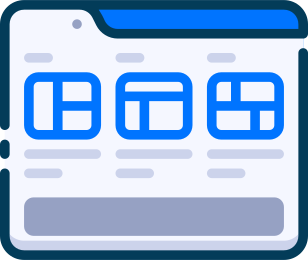
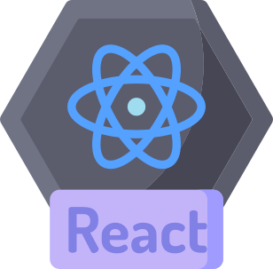
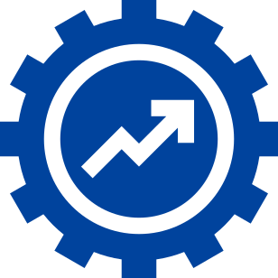

Вы нуждаетесь в крутом сайте?
Я помогу Вам в этом!

Узнать больше
Разработаем сайт так, чтобы он выглядел хорошо на всех устройствах.
Отсутствие некорректной работы, ошибок в вёрстке и способность отображать материал с одинаковой степенью читабельности.
Этот показатель влияет на ранжирование сайта в рейтинге поисковой выдачи.
Гарантия на верстку - В течении недели после того как я Вам передам архив с готовой версткой, я могу по Вашей просьбе вносить правки в коде без доплат.
HTML
0
CSS
0
JS
0
PHP
0



Html5
Css3
Less
БЭМ
Bootstrap
FlexBox
css grid
JavaScript
jQuery
React
Typescript
Php
Базы данных и SQL